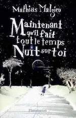
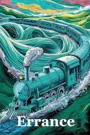

2023
Août
-
20 —
La nuit et le jour
Maintenant qu’il fait tout le temps nuit sur toi (Mathias Malzieu), Cavale ça veut dire s’échapper (Cali)
- 05 — Dowi et le jambon, court texte
Juillet
- 16 — 💖 Pour un garçon de Nick Hornby
- 11 — Little Monsters de Kara Thomas
- 08 — No et moi de Delphine De Vigan
Mai
Janvier
2022
Novembre
Octobre
- 26 —  Errance, court texte
- 26 (édité) — Spreadshirt - Designs pour vêtements
Juillet
- 20 — Vacances à Gavarnie en juillet 2022
-
19 —
Romance et piraterie
Oh happy day (Anne-Laure Bondoux et Jean-Claude Mourlevat), L'île au trésor (R.L. Stevenson)
Juin
Mai
Mars
-
20 —
💖 Enquête et romance
Sang trouble (Robert Galbraith), Avec toi les rêves fleurissent sous la neige (Mhairi McFarlane)
- 04 (édité) — Poèmes
Février
Janvier
- 24 — Fiche Romarin